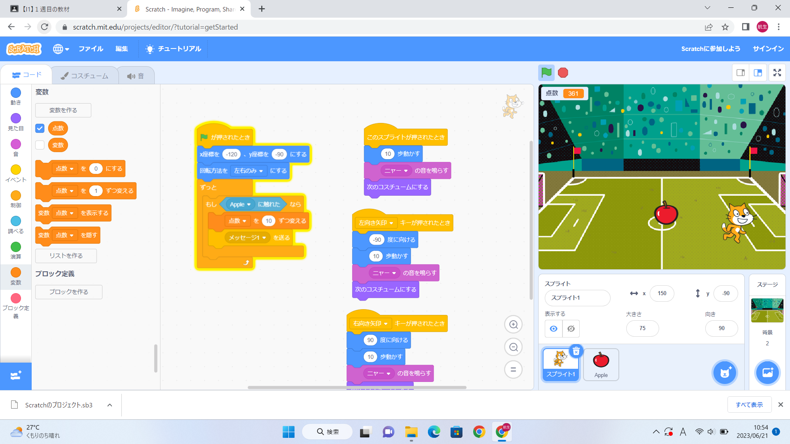

1-2 ゲーム

1.内容
ゲームプログラム：旗が押されたら猫の座標をx=-120,y=-90に設定して、キーボードの矢印キーが押されたら矢印キーの方向に動き、
音が鳴り、コスチュームを変えるようにする。そして、左右反転の設定、背景の設定をしたら猫が動くプログラムができる。
リンゴをランダムに落とし、猫がリンゴに触れるとリンゴが消え、点数が増えるようにすると、
猫を移動させてリンゴをつかむゲームの完成。
2.感想
リンゴと同じように爆弾がランダムに落ちてきて、爆弾を食らったら点数が下がるプログラムを追加することで、
ゲームに新しい要素をつけ加えれると考えた。その先もいろいろ考えると楽しく感じました。